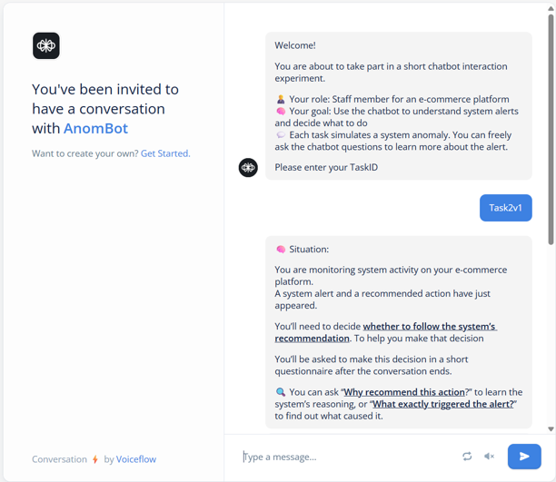

Baseline
Alert only — no explanation
control
Anomify is a B2B platform that uses AI to monitor supply-chain and inventory data for high-stakes e-commerce operations. I designed and evaluated a multi-dimensional Explainable AI (XAI) framework inside its alerting chatbot — turning opaque "black-box" warnings into explanations operations teams can actually act on.
In high-stakes B2B e-commerce, operations teams rely on AI to monitor data risks around the clock. But the black-box nature of AI alerts creates a severe trust gap: when a warning appears with no reasoning behind it, people can't tell what it means — or whether to believe it.
Faced with warnings they can't inspect, users swing between two failure modes —over-relying on the AI without scrutiny, or dismissing critical issues entirely. Neither is safe when a missed anomaly can mean a stalled shipment or a costly inventory error.
How might we design explanations so users trust AI alerts the right amount — neither too much nor too little?
I designed and evaluated a multi-dimensional XAI framework within the chatbot, with one goal: optimize decision efficiency through calibrated trust. Rather than teaching users how the algorithm works, the explanations give them justifiable, business-centric reasons to act.
To scientifically quantify how different explanation strategies affect trust, I ran a within-subjects study — every participant experienced every condition, eliminating individual variance. The study simulated a live B2B supply-chain monitoring environment and isolated two variables: whether the alert showed its source data, and whether it showed a confidence score.
Participants played the role of e-commerce operations managers and completed three targeted tasks, each probing a different dimension of trust and decision-making.
Reviewing a stock-discrepancy alert, participants used the chatbot to trace the cause; it justified its finding by pointing to specific server logs and tracking records.
Facing a logistics alert (e.g. a severe shipping delay), participants asked the chatbot to verify; it returned a specific certainty metric for its diagnosis.
Under cognitive load, participants triaged a backlog of concurrent alerts and ranked them by severity, using a combined strategy to prioritize.
To maximize ecological validity during testing, I engineered a fully reactive chatbot rather than clickable screens.
Conversation architecture — built in Voiceflow to orchestrate multi-turn dialogue trees, conditional branching, and a dual-channel input system (guided buttons + free-text natural language). Dynamic AI responses — integrated the ChatGPT API with optimized prompt engineering to simulate realistic, human-like reasoning when the bot flagged logistics delays or inventory anomalies.

I paired numbers with narrative to make sure the insights held up under both lenses.
Subjective ratings on Likert scales, tested with the non-parametric Mann-Whitney U test to validate statistically significant differences between conditions.
Semi-structured post-experiment interviews, transcribed and coded through a three-tier thematic analysis to map users' mental models of AI transparency.
The most interesting findings were the ones that complicated the hypothesis. Showing the AI's reasoning changed how much users trusted it far more than how much they understood — and a confidence number alone did surprisingly little.
| Measure | Control | Source-based |
|---|---|---|
| Confidence in decision | 6.20 (0.92) | 7.40 (2.27) |
| Confidence in chatbot support | 6.40 (1.71) | 7.90 (2.08) |
| Explanation seen as well-founded | 3.40 (0.70) | 4.20 (0.79) |
| Understanding of anomaly | 3.50 (0.85) | 3.90 (0.74) |
| Usefulness of source info | N/A | 4.60 (0.52) |
Pointing to server logs made people more confident and more trusting, and they rated the source information as highly useful (4.60/5). But it didn't significantly improve their actual understanding of the anomaly's cause. Transparency calibrated trust more than it transferred knowledge.
Having this source made it clear to me that he wasnn't making it up.
This has happened before, so it shouldnn't be a big deal.
| Measure | Control | Confidence-based |
|---|---|---|
| Willingness to follow (10-pt) | 8.20 (0.92) | 8.30 (2.21) |
| System trust (10-pt) | 7.90 (0.88) | 7.20 (2.25) |
| Decision confidence (10-pt) | 8.50 (1.08) | 8.20 (1.40) |
| Confidence boosts willingness (5-pt) | N/A | 4.20 (1.03) |
| Credibility of confidence info (5-pt) | N/A | 4.10 (0.74) |
Adding a certainty score produced no significant differences in willingness, trust, or decision confidence versus the control — even though users rated the score as credible (4.10/5) and said it boosted their willingness to act (4.20/5). A number on its own is easy to nod at and easy to ignore; without context, it doesn't shift behavior when baseline trust is already high.
92 per cent is already very high.
92% — it's not labelled with a source, so I retain my own judgement.
It's consistent with my judgement, so I'm willing to listen.
| Comparison | Basic | Combined |
|---|---|---|
| Confidence in explanation (n = 20) | 7.00 (1.38) | 7.90 (1.12) |
| Group 1 — combined seen first | 6.90 (1.97) | — |
| Group 2 — combined seen second | — | 8.10 (1.20) |
When triaging alerts, participants were more confident in combined explanations (source + confidence) than basic ones (7.90 vs 7.00). Order mattered: the group that met the combined alert after a basic one preferred it more strongly (8.10 vs 6.90). Pairing evidence with certainty was the most persuasive combination for high-stakes prioritization — and contrast made its value obvious.
Percentages plus tables give me more confidence in my decisions.
I'd trust it more if given a range — a single number is rather strange.
Translating the findings into guidance the Anomify team could build against.
Keep the primary view to the alert alone. Surface source logs and confidence scores at a secondary level, on demand — so transparency is an active investigative tool, not passive interface noise.
Adapt explanation depth to the task's risk and cognitive load. High-risk, ambiguous alerts get full source + certainty for human-in-the-loop triage; routine ones stay lightweight and fast.
Shift focus from how the algorithm works to justifiable, business-centric reasons to act. The goal of XAI isn't to make users data scientists — it's a partnership where they feel secure enough to act.